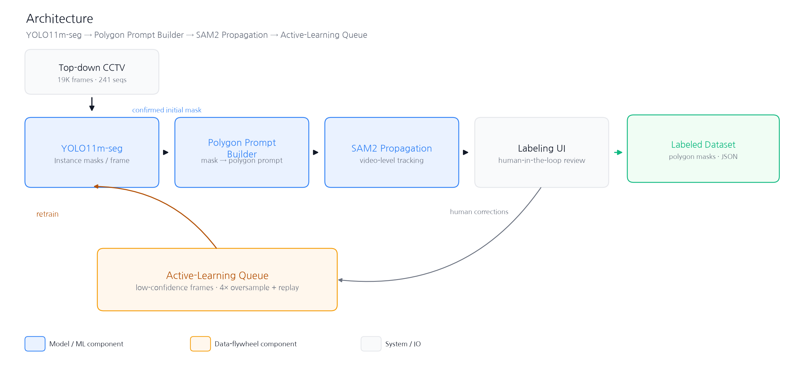
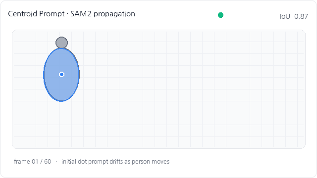
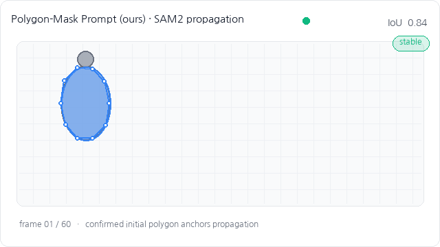
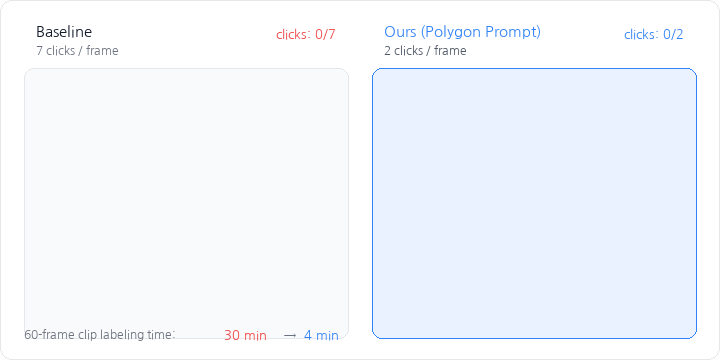
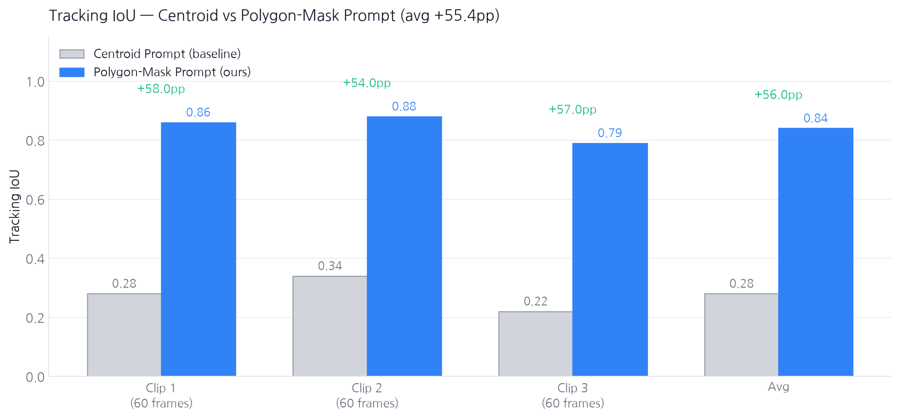

01 · Problem Definition — 탑뷰 도메인과 라벨링 병목
스마트 엘리베이터 프로젝트에서 요구되는 학습 데이터는 탑뷰(top-down) 시점의 4K CCTV 영상이었습니다. 이 도메인은 COCO 계열 사전학습 검출 모델이 주로 학습한 정면·측면 시점과 달라 기존 모델의 검출 성능이 크게 떨어졌습니다. 그 결과 자동 라벨을 그대로 활용하기 어려웠고, 수작업 라벨링에 많은 시간이 소요됐습니다.
SAM2의 영상 마스크 전파 기능을 사용하더라도 중심점 하나만 전달하는 프롬프트는 초기 마스크가 부정확할 때 객체의 실제 경계를 충분히 설명하지 못했습니다. 이로 인해 프레임이 진행될수록 마스크가 객체에서 벗어나는 현상이 누적됐습니다.
02 · Solution Goals
- 탑뷰 영상에 맞춘 객체 세그멘테이션 모델을 학습해 자동 라벨의 품질을 높입니다.
- 초기 마스크의 형태 정보를 SAM2에 전달해 영상 내 마스크 전파의 안정성을 확보합니다.
- 자동 생성 결과를 여러 작업자가 검수·수정할 수 있는 웹 라벨링 도구로 제공합니다.
- 소량의 초기 라벨에서 출발해 검수 데이터를 반복적으로 축적하는 Active Learning 흐름을 구현합니다.
03 · Implementation — 검출, 마스크 전파, 반복 라벨링
탑뷰 전용 세그멘테이션 모델을 먼저 학습했습니다. 정면·측면 시점 중심의 사전학습 모델만으로는 엘리베이터 내부의 탑뷰 영상에서 객체 경계를 안정적으로 찾기 어려웠습니다. 이에 4K CCTV 19K 프레임과 241개 시퀀스를 사용해 YOLO11m-seg를 파인튜닝하고, 객체 위치뿐 아니라 마스크까지 자동으로 생성하도록 했습니다.
SAM2 입력은 중심점에서 폴리곤 마스크로 바꿨습니다. 중심점 방식은 객체의 대략적인 위치만 전달하므로, 초기 마스크가 불완전하면 배경까지 포함한 상태로 다음 프레임에 전파될 수 있었습니다. 반면 폴리곤 마스크는 객체의 영역과 경계를 함께 전달하므로, 검증된 초기 마스크를 기준으로 후속 프레임의 형태를 더 안정적으로 유지할 수 있었습니다.
Active Learning Loop — 저신뢰 프레임을 재학습으로 연결
모델 예측에서 검수 대상을 고르고, 수정 라벨을 다음 학습에 되돌리는 루프를 별도로 구현했습니다. 단순히 자동 라벨을 생성하는 데서 끝내지 않고, 검출 결과 중 confidence가 0.7 이하인 예측을 자동으로 검수 후보로 선별해 웹 도구의 작업 큐로 전달했습니다.
- Candidate Selection: 검출 예측의 confidence가 0.7 이하인 항목을 자동으로 검수 대상으로 선별
- Human Review: 작업자가 객체 누락과 마스크 오류를 확인하고 라벨을 수정
- Dataset Update: 검수가 완료된 수정 라벨을 학습 데이터셋에 반영
- Retraining: 새로 확보한 저신뢰 사례가 학습에서 충분히 반영되도록 4배 오버샘플링과 replay 적용
이 과정을 통해 모델 예측 → 검수 후보 선별 → 사람의 수정 → 데이터셋 갱신 → 재학습이 이어지는 실제 데이터 피드백 루프를 구성했습니다. 별도의 획득 함수나 불확실성 추정 알고리즘을 새로 제안한 것이 아니라, 저신뢰 프레임을 검수 우선순위로 활용하는 운영형 Active Learning 구현입니다.
여러 작업자가 함께 사용할 수 있도록 웹 도구로 배포했습니다. FastAPI와 React/Vite로 검수 인터페이스를 구성하고, Docker·SLURM·NAS를 연결해 모델 실행과 데이터 저장을 분리했습니다.

세부 처리 구조입니다. YOLO11m-seg가 객체 영역을 찾으면 폴리곤 마스크를 SAM2 입력으로 전달합니다. SAM2는 이를 기준으로 후속 프레임의 마스크를 추적하고, 신뢰도가 낮거나 수정이 필요한 프레임은 검수 후보로 모읍니다.

기존 중심점 프롬프트 방식입니다. 초기 마스크가 부정확하면 중심점 하나만으로 객체의 형태와 경계를 충분히 전달하지 못해, 프레임이 진행될수록 마스크가 주변 영역으로 벗어나는 현상이 나타납니다.

개선한 폴리곤 마스크 프롬프트 방식입니다. 점 하나가 아니라 객체의 영역과 경계를 함께 전달해, 초기 마스크를 기준으로 후속 프레임에서도 형태가 더 안정적으로 유지되도록 했습니다.

웹 라벨링 도구 사용 화면입니다. 자동 생성된 마스크를 검수하고 필요한 부분만 수정할 수 있도록 구성해, 프레임마다 반복하던 수동 입력을 줄였습니다.
04 · Results & Field Application

3개 테스트 클립(각 60프레임)에서 두 프롬프트 방식의 Tracking IoU를 비교한 결과입니다. 폴리곤 마스크 프롬프트가 평균 55.4%p 높아, 마스크 전파의 안정성이 개선됐음을 보여줍니다.
최종적으로 사내 다중 사용자 웹 라벨링 도구로 배포해 탑뷰 CCTV 데이터의 검수·수정 작업을 지원하고, 수작업 라벨링에 집중되던 시간을 줄였습니다.